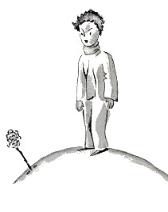
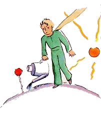
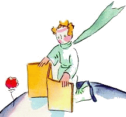
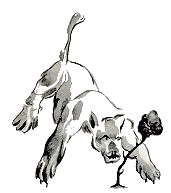
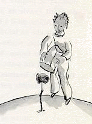

小王子 The Little Prince
第8章
第8章
我很快就对这朵花儿有了更多的了解。在小王子的星球上，过去一直长着些很简单的花儿，这些花儿只有一层花瓣，不占地方，也不妨碍任何人。某个早晨她们会在草丛中绽放，一到晚上又都悄悄凋谢了。有一天，一颗不知从哪儿来的种子发了芽，长出的嫩苗跟别的幼苗都不一样。小王子小心翼翼地观察着这株嫩苗，它说不定是猴面包树的一枝幼芽呢。但是这株嫩苗很快就不再长大，渐渐含苞欲放。小王子眼看着它绽出一个很大很大的花蕾，心想这花蕾里一定会出现奇妙的景象，可是这朵花儿待在绿色的花萼里面，磨磨蹭蹭地打扮个没完。她精心挑选着自己的颜色，慢吞吞地穿上衣裙，一片一片地理顺花瓣。她不愿像虞美人那样一亮相就是满脸皱纹。她要让自己美艳照人地来到世间。噢！对。她很爱俏！她那神秘的装扮，就这样日复一日地延续着。然后，有一天早晨，太阳刚升起的时候，她绽放了。
她精心打扮了那么久，这会儿却打着哈欠说：
“啊！我刚睡醒……真对不起……头发还是乱蓬蓬的……”
这时，小王子的爱慕之情油然而生：
“您真美！”
“可不是吗，”花儿柔声答道，“我是跟太阳同时出生的嘛……”
小王子感觉到了她不太谦虚，不过她实在太楚楚动人了！
“我想，现在该是用早餐的时间了，”她随即又说，“麻烦您也给我……”
小王子很不好意思，于是就打来一壶清水，给这朵花儿浇水。
就这样，她带着点多疑的虚荣心，很快就把他折磨得够呛。比如说，有一天说起她的四根刺，她对小王子说：
“那些老虎，让它们张着爪子来好了！”
“我的星球上没有老虎，”小王子顶了她一句，“再说，老虎也不吃草呀。”
“我不是草，”花儿柔声答道。”
“对不起……”
“我不怕老虎，可我怕风。您没有风障吗？”
“怕风……一棵植物到了这份上，那可惨了，”小王子轻声说，“花儿可真难伺候……”
“晚上您要把我罩起来。您这儿很冷。又没安顿好。我来的那地方……”
可是她没说下去。她来的时候是颗种子。她不可能知道别的世界是怎么样的。让人发现她说的谎这么不高明，她又羞又恼，就咳了两三声嗽，想让小王子觉得理亏：
“风障呢？”
“我正要去拿，可您跟我搭话了！”
于是她咳得更重了些，不管怎么说，她非让他感到内疚不可。
就这样，小王子尽管真心真意喜欢这朵花儿，可还是很快就对她起了疑心。他对那些无关紧要的话太当真了，结果自己很苦恼。
“我本来不该去听她说什么的，”有一天他对我说了心里话，“花儿说的话，是听不得的。花儿是让人看，让人闻的。这朵花儿让我的星球芳香四溢，我却不会享受这快乐。老虎爪子那些话，惹得我那么生气，其实我该同情她才是……”
他还对我说：
“我当时什么也不懂！看她这个人，应该看她做什么，而不是听她说什么。她给了我芳香，给了我光彩。我真不该逃走！我本该猜到她那小小花招背后的一片柔情。花儿总是这么表里不一！可惜当时我太年轻，还不懂得怎么去爱她。”
